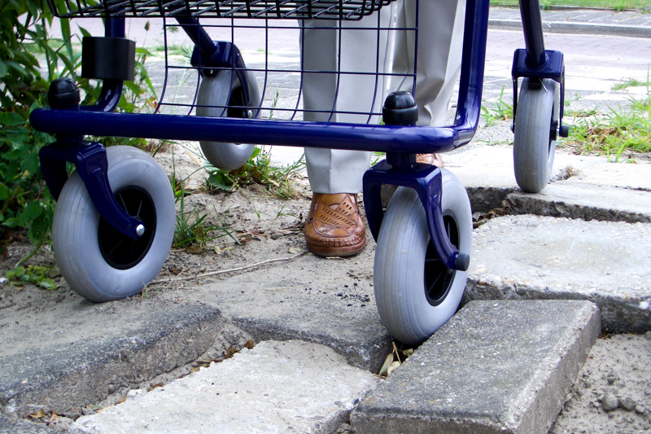

Geriatriefysiotherapie
Ouder worden gaat vaak gepaard met afname van beweeglijkheid en kracht. Om gezond ouder te worden kan het soms een goed idee zijn om in contact te komen met een fysiotherapeut die gespecialiseerd is in het behandelen van ouderen. Deze fysiotherapeut heeft zich gespecialiseerd in de gevolgen van ouder worden en de zorg die nodig is voor meer kwetsbare personen met een hoge biologische leeftijd te behandelen.
Het gaat bij de behandeling van deze personen veelal om complexe problematiek. Het behandelplan zal daarom voor iedere patiënt anders zijn. Niet alleen ouderen, maar ook om patiënten die vanwege een aandoening, bijvoorbeeld een beroerte, problematiek ervaren die overeenkomt met ouder worden, kunnen bij deze therapeut terecht.
Wat is geriatriefysiotherapie?
Geriatriefysiotherapie zal zich richten op het doen van oefentherapie. Op deze manier kunnen klachten die ervaren worden tijdens het dagelijkse bewegen worden verminderd en/of achteruitgang in fysiek functioneren worden beperkt. Ook kan de therapeut ondersteuning bieden in het adviseren en begeleiden van gezinsleden en eventuele mantelzorgers. Martine is binnen De Merk gespecialiseerd in fysiotherapie bij geriatrische patiënten.
Door de kracht van onze Heer en mede door de inspirerende inzet van onze fysiotherapeut is het gelukt om uit het dal (verpleeghuis, ziekenhuis opname) de berg omhoog te beklimmen, teneinde een zo goed mogelijk reslultaat te bereiken. Zeker gezien mijn hoge leeftijd van ruim 80 jaar. (J. Hoekstra)
Martine is binnen De Merk gespecialiseerd in fysiotherapie bij geriatrische patiënten.